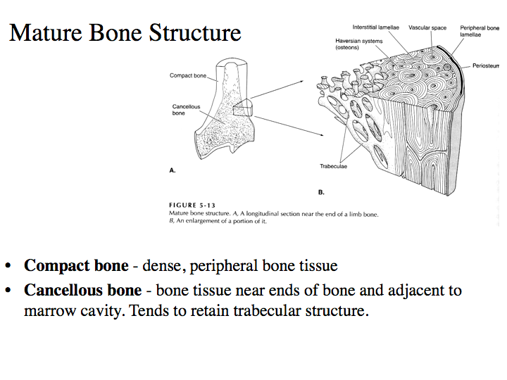
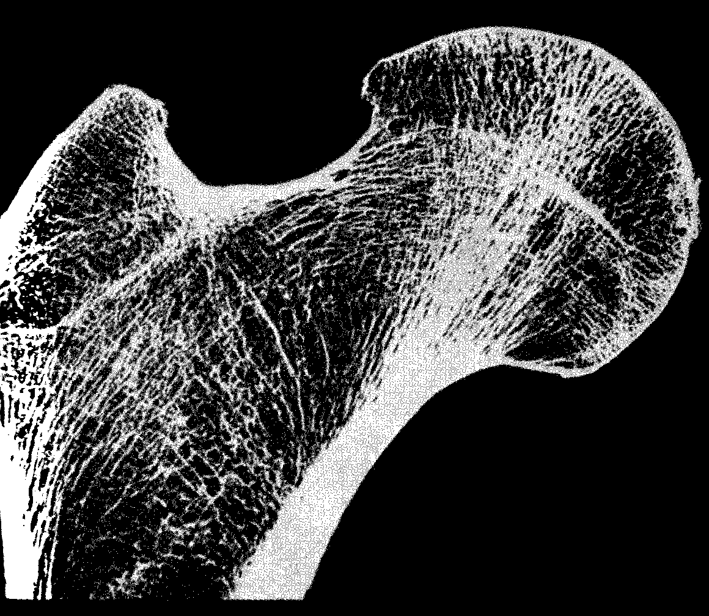

Colossal Whale Discussion
Pre-class materials
Before class, you can prepare by reading the following materials:
- Bianucci, et al (2023) [Google Drive copy] - please accept invitation to join
Reminders
- Get the Book $20 from SoLS Office St. John 101.
- Friday class at Hamilton Library
- Great Lab Discussion yesterday. Hlimoneko was just an example. Please focus on content, not style.
- Labs Next Week - Meet at Honolulu Zoo at 1:30pm. LMK if you need a ride from campus
Todays Discussion
Discussion Groups
| Group | Partner 1 | Partner 2 | Partner 3 | |
|---|---|---|---|---|
| 1 | Kirsten | Morgan | ||
| 2 | Adry | Matthew | ||
| 3 | Maisie | Christina | ||
| 4 | Justin | Sasha | ||
| 5 | Mayuka | Logan M | ||
| 6 | Alvin | Richard | ||
| 7 | Anna | Kylie | ||
| 8 | Krystal | Logan B | Garrett |
Successful Discussions
- Dig deeper into a subject
- Bring out everyone’s ideas
- Explore and evaluate arguments
- Provide a forum for pitching ideas and practicing vocabulary
- Encourage equal participation
- Are interactive, evaluate strengths and soft-spots
The Colossal Whale

Discussion Agenda
- Reading Assessment
- Warm up
- Funny format of Science, Nature, PNAS - Abstract, Intro, Results/Discussion, followed by Methods.
- Shall we define any new vocabulary?
- Small Group Discussion
Compact and Cancellous Bone
Bone structure is fascinating. As organisms get larger, bones provide structural support. But bones also grow and remodel, as well as provide bone marrow for the development of blood cells.
The structural part is generally in the compact bone. The cancellous bone is the spongy interior and in the joints.


Explore Library Resources
Where do we find information?
General Background is best found in BOOKS. Academic books are the best source for things that are well-known or have been known for a long time. Here you will find general information about the habitat at the time (paleontology books), the general biology of that kind of animal (e.g. herpetology, mammology, or mammalian paleontology, etc. ). Get all the books you can in Hamilton for a strong foundation.
Compilations can be found in REVIEW ARTICLES
Academic authors will sometimes write a summary of the last 10 years or so of reasearch in a review article. These are often found in Annual Reviews as well as other places. If one exists for your group, get it.
Newest Information can be found in JOURNAL ARTICLES. Scientific articles report the latest findings at that moment in time.
Search Strategies
Start with the Zool430 study guide to get familiar with what kinds of books are available
- Check out the tabs along the top
- The “In Class Exercises” is very helpful for developing database
- Be sure to enter through the UH library website and login for free access.
- UH Library science databases and E-journals: http://www.hawaii.edu/sciref/.
- Check out “Science & Technology Databases” tab.
- Good databases: Web of science, google scholar, or zoological record
- Jonathan Young is our own Natural Sciences Reference Librarian. Please reach out to him for help - heʻs very friendly and willing to help.
For Next Time
- Library Day! On Friday Meet at Hamilton Lobby, first floor just inside the door at 11:30pm
- Bring your UHID to check out books
- Start exploring potential fossils with your partner online
- Browse the book collection online, to get some ideas for Friday